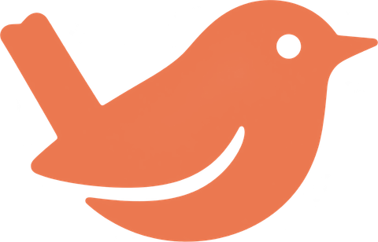

Spaces
Keep work, home and side projects in separate sets of tabs. Swipe with two fingers on the sidebar to move between them.
Two-finger swipe

A small, quick browser that stays out of your way. Here are the few things worth knowing on day one.
Start anywhere with the spotlight Type a web address, search the web, or jump to a tab you already have open.
Keep work, home and side projects in separate sets of tabs. Swipe with two fingers on the sidebar to move between them.
Hide the sidebar and toolbar so the page gets the whole window. They slide back when you move to the edge.
Peek at a link in a floating window without leaving the page you are reading.
Put two or more tabs side by side, or in a grid, in one window.